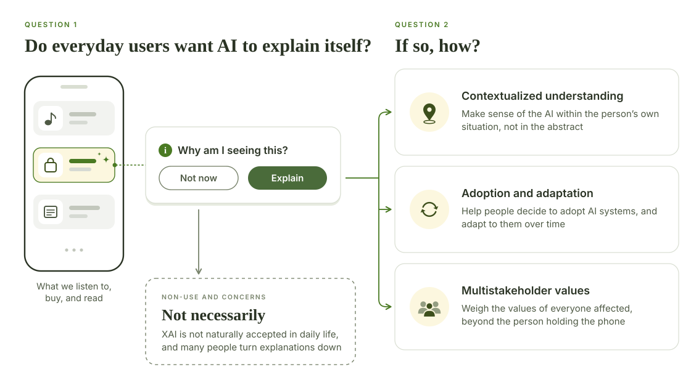

Explainable AI in Everyday Life: Non-Use, Concerns, and Ideal Design
Explainable AI research has mostly served model developers and high-stakes decisions. Yet AI now shapes what we listen to, buy, and read every day, often in opaque ways. Do everyday users want these systems to explain themselves, and if so, how?

Approach
This paper is the qualitative half of a mixed-methods project on how end users see explainable AI in the AI applications they use every day. It reports a thematic analysis of participants' open-ended responses, while the companion CHI 2025 extended abstract quantifies the effects of XAI design properties recommended in the literature.
Central Questions
Do everyday users want AI systems to explain themselves?
Not necessarily. XAI is not naturally accepted by end users in their daily lives. The paper looks at non-use, when people choose not to engage with the explanations offered by the AI in their everyday applications, and at the concerns people have about bringing explainability into daily AI interactions.
If so, how should they explain?
When people do seek explanations, they envision designs that do three things:
Contextualized understanding
Explanations that make sense of the AI within the user's own situation, not in the abstract.
Adoption and adaptation
Explanations that help people decide to adopt AI systems and adapt to them over time.
Multistakeholder values
Explanations that consider the values of everyone affected, beyond the person holding the phone.
Design Implications
- Support users' agency in XAI non-use, and consider alternatives to XAI for managing ambiguity in AI interactions.
- Understand users through a computational rationality lens.
- Build adaptive XAI that co-evolves with users rather than one-size-fits-all explanations.
- Advance a “society-in-the-loop” vision with everyday XAI, designing at both the personal and societal levels.
Related
Cite
Lingqing Wang, Chidimma Lois Anyi, Kefan Xu, Yifan Liu, Rosa I. Arriaga, and Ashok K. Goel. 2025. Explainable AI for Daily Scenarios from End-Users' Perspective: Non-Use, Concerns, and Ideal Design. In Proceedings of the 2025 ACM Designing Interactive Systems Conference (DIS '25). ACM, 2328–2349. https://doi.org/10.1145/3715336.3735796